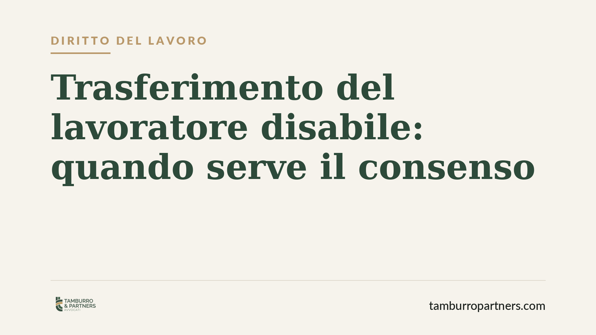

Trasferimento del lavoratore disabile: quando serve il consenso
Il lavoratore con disabilità gode di una tutela rafforzata contro il trasferimento di sede. L'articolo 33, comma 6, della Legge 104/1992 richiede il suo consenso, ma la Corte di Cassazione ha chiarito che il limite non è assoluto: in presenza di una grave incompatibilità ambientale il datore può disporre lo spostamento. Vediamo dove passa il confine e cosa fare in concreto.

Il caso e perché conta
La domanda è ricorrente: un dipendente titolare dei benefici della Legge 104/1992 può essere trasferito in un'altra sede contro la sua volontà? La risposta ordinaria è negativa, ma esiste una linea interpretativa della Corte di Cassazione che introduce un'eccezione rilevante quando il rapporto in ufficio è diventato ingestibile.
La questione tocca due interessi contrapposti: la tutela del lavoratore fragile, da un lato, e il potere organizzativo del datore di lavoro, dall'altro. Capire dove si colloca l'equilibrio è essenziale sia per chi subisce il provvedimento sia per chi lo adotta.
Inquadramento normativo
Il riferimento è l'articolo 33, comma 6, della Legge 104/1992. La norma stabilisce che il lavoratore maggiorenne con disabilità in situazione di gravità (accertata ai sensi dell'art. 3, comma 3) "non può essere trasferito in altra sede, senza il suo consenso". Si tratta di una garanzia specifica, aggiuntiva rispetto ai limiti generali al trasferimento previsti dall'articolo 2103 del Codice civile, che consente lo spostamento solo per "comprovate ragioni tecniche, organizzative e produttive".
La stessa tutela è riconosciuta, con formulazione analoga, al lavoratore che assiste un familiare disabile grave (art. 33, comma 5). In entrambi i casi il legislatore ha voluto proteggere la continuità di vita e di cura, sottraendola alla discrezionalità organizzativa dell'impresa.
La Corte di Cassazione ha però precisato che il divieto non ha carattere assoluto. Quando ricorre una situazione di incompatibilità ambientale – cioè un conflitto grave e oggettivo tra il lavoratore e l'ambiente di lavoro, tale da compromettere il regolare svolgimento dell'attività – il trasferimento può essere legittimo anche senza consenso, purché il datore dimostri l'effettività e la gravità della situazione.
Implicazioni pratiche
Per il lavoratore, la protezione resta forte ma non incondizionata. Non basta essere titolari dei benefici della Legge 104 per bloccare qualsiasi spostamento: se l'azienda documenta un conflitto serio e non altrimenti risolvibile, il diritto al consenso può cedere.
Per il datore di lavoro, l'eccezione non è una scorciatoia. L'incompatibilità ambientale deve essere provata con elementi concreti e verificabili: segnalazioni, contestazioni, episodi documentati. Non è sufficiente invocare genericamente tensioni interne o un clima difficile. Il trasferimento adottato senza reale giustificazione è nullo, e il lavoratore può chiederne la disapplicazione oltre al risarcimento dei danni.
Un punto spesso trascurato: il consenso deve essere esplicito e non può essere desunto da comportamenti ambigui. L'accettazione tacita del nuovo posto di lavoro, ad esempio, non equivale automaticamente a consenso valido.
Cosa fare in concreto
- Verificate il presupposto formale. Controllate che la disabilità grave sia accertata ai sensi dell'art. 3, comma 3, della Legge 104: la tutela rafforzata scatta solo in questo caso.
- Documentate tutto. Se ricevete o disponete un trasferimento, conservate comunicazioni scritte, provvedimento aziendale e motivazioni allegate. La prova è decisiva.
- Analizzate la motivazione. Chi subisce il provvedimento deve valutare se l'azienda invochi una reale incompatibilità ambientale o una motivazione generica: nel secondo caso il margine di contestazione è ampio.
- Reagite nei tempi. Il provvedimento illegittimo va contestato tempestivamente, per iscritto, prima di rendere operativo lo spostamento.
- Consigliamo una valutazione preventiva. Prima di adottare o accettare il trasferimento, un esame della documentazione consente di misurare i rischi e le possibili tutele.
Conclusione
La Legge 104 costruisce una protezione solida ma non un divieto assoluto. Il confine tra tutela del lavoratore e potere organizzativo dell'impresa passa dalla prova dell'incompatibilità ambientale: senza elementi concreti, il trasferimento resta illegittimo; con essi, la garanzia del consenso può recedere. La differenza, come spesso accade nel diritto del lavoro, la fa la documentazione.
---
*Contributo informativo a cura di Tamburro & Partners - Avv. Giuseppe Tamburro. Non costituisce parere legale.*
Ogni storia di lavoro ha i suoi tempi.
Se gestisci HR e vuoi un confronto su contenzioso, ispezioni o licenziamenti, scrivi allo studio. Ti rispondiamo entro un giorno lavorativo.